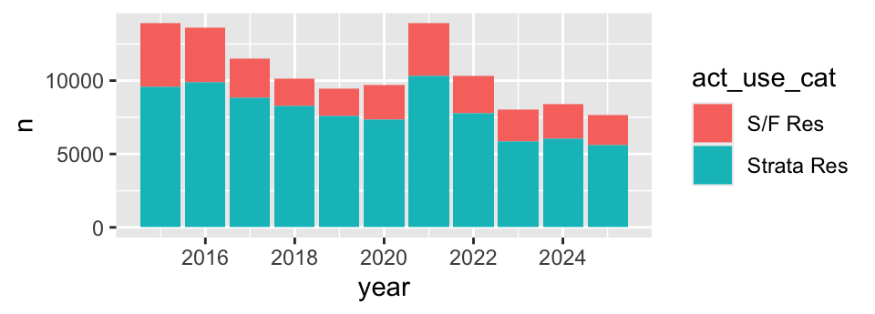
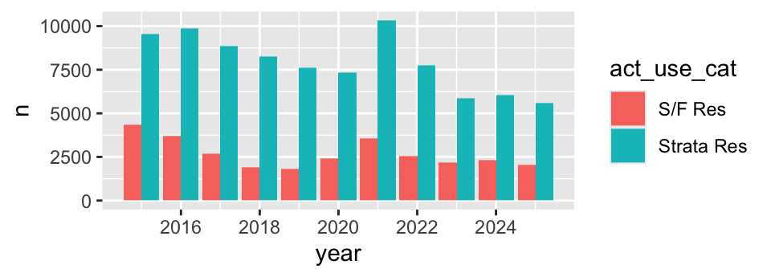
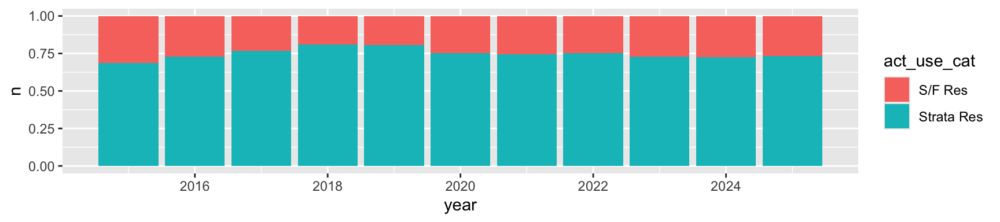
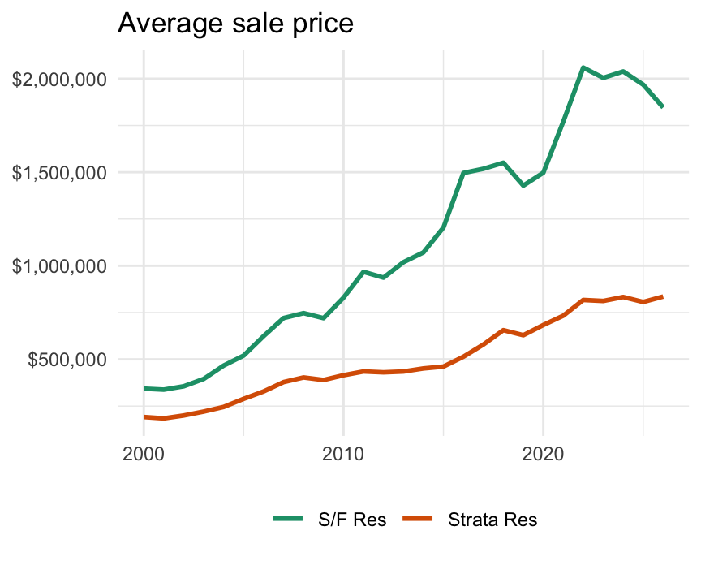

avg_price is from deck 06. van17 holds City of Vancouver sales in 2017, with price_m in millions.
In deck 06, ggplot(), aes(), and geom_*() decided what is drawn. This deck covers the functions around them. A few of those change what a chart says, not only how it looks.
Left: with no groups, the line joins every point in year order. Right: group splits the line, as group_by() splits rows. In deck 06, colour = act_use_cat did the same: a text column in colour also sets the group.
A.colour is local to geom_point(), so geom_smooth() has one group and fits one line to all the points. Move colour into ggplot() to get one line per type.
scale_*() turns values into axes and colours
The name says what changes: scale_, the mapping, then how.
Function
Changes
scale_x_continuous(breaks = c(2000, 2010, 2020))
Which x values get a gridline and a label
scale_x_continuous(limits = c(0, 2000))
The x-axis range, dropping rows outside it
scale_x_log10()
The x-axis, to a log scale
scale_colour_brewer(palette = "Dark2")
The colours for the colour mapping
When you review AI-written code, you can skim most scale_*() lines: they change labels and colours. Stop at limits, which drops rows, and log scales, which change what geoms compute.
Left: a few large, expensive homes stretch the axes, and most sales crowd into a corner. Right: on a log scale each gridline is a multiple of the last, so the spread shows.
scales::label_dollar() uses label_dollar() from the scales package without loading it. label_comma() and label_percent() work the same way.
A bar’s length shows its value. On the right, the 2022 bar is 4.1 times as long as the 2025 bar, but the median fell only 8%. To zoom in, use points or a line.
as.character() turns the factor into text, which has no levels. ggplot sorts text alphabetically.
lubridate works with dates
year() has been in our code since deck 02. It comes from lubridate, which loads with the tidyverse.
d <-ymd("2025-03-14")c(year(d), mday(d))
[1] 2025 14
month(d, label =TRUE)
[1] Mar
12 Levels: Jan < Feb < Mar < Apr < May < Jun < Jul < Aug < Sep < ... < Dec
wday(d, label =TRUE, week_start =1)
[1] Fri
Levels: Mon < Tue < Wed < Thu < Fri < Sat < Sun
ymd() reads text as a date. week_start = 1 puts Monday first: the function sets the levels.
The functions around the geoms
Family
Controls
Example
scale_*()
How values become axes and colours: limits, breaks, number formats, log scales
scale_y_log10()
coord_*()
The plotting area: zoom, flip
coord_flip()
facet_*()
One panel per group
facet_wrap(~ act_use_cat)
labs()
Text: title, axis names, legend title, caption
labs(y = "Price")
theme_*(), theme()
The look that is not data: background, fonts, legend position
theme_minimal()
guides()
Legends
guides(colour = "none")
Inside a geom, alpha, linewidth, and position = "dodge" set that layer’s look. Use these names when you ask AI to restyle a chart; to sort bars by value, ask for fct_reorder().
Sales in four cities
cities <-c("City of Vancouver", "City of Surrey","City of Burnaby", "City of Richmond")city_sales <- bca |>filter(juris_label %in% cities, year(sale_date) <=2025) |>count(juris_label, year =year(sale_date))city_sales |>head(3)
# A tibble: 3 × 3
juris_label year n
<chr> <dbl> <int>
1 City of Burnaby 2000 2615
2 City of Burnaby 2001 3447
3 City of Burnaby 2002 4281
city_sales has one row per city and year. n is the number of sales.
scales = "free_y" gives each panel its own y-axis. Shapes are easier to compare; levels are not. Burnaby’s line now fills its panel like Surrey’s, yet Surrey had 2.4 times as many sales in 2025. Read the axis labels before you compare panels.
Bars stack by default
van_sales <- bca |>filter(juris_label =="City of Vancouver",between(year(sale_date), 2015, 2025)) |>count(year =year(sale_date), act_use_cat)sales_plot <-ggplot(van_sales, aes(year, n, fill = act_use_cat))
sales_plot +geom_col()

sales_plot +geom_col(position ="dodge")

Left: the stack shows totals, but the top segments start at different heights, so single-family sales are hard to compare. Right: position = "dodge" starts every bar at zero.
position = “fill” turns counts into shares
sales_plot +geom_col(position ="fill")

Each bar now sums to 1: shares, not counts. The axis still says n, and nothing warns you. Label it yourself:
scale_y_continuous(labels = scales::label_percent()) +labs(y ="Share of sales")
Quick check: shares or counts?
On the last chart, strata’s share of Vancouver sales rose from 73% in 2016 to 81% in 2019. Did the number of strata sales rise?
A. Yes B. The chart cannot tell you
B. A share can rise while the count falls. Strata sales fell from 9,886 to 7,598, but single-family sales fell faster, from 3,712 to 1,827. To compare counts, use position = "dodge".
Read a long AI-written chart
# 1. data and mappingsggplot(avg_price,aes(sale_year, avg_price, colour = act_use_cat)) +# 2. what to drawgeom_line(linewidth =1) +# 3. how values become labels and coloursscale_y_continuous(labels = scales::label_dollar()) +scale_colour_brewer(palette ="Dark2") +# 4. textlabs(title ="Average sale price",x =NULL, y =NULL, colour =NULL) +# 5. the look that is not datatheme_minimal() +theme(legend.position ="bottom")

Only ggplot(), aes(), and geom_*() decide what is drawn. Most other lines change only the look. The next slide lists the exceptions.
Lines that change what a chart says
Line
What it changes
What to do
scale_x_continuous(limits = ...)
Drops rows before geoms compute
Zoom with coord_cartesian()
scale_x_log10(), scale_y_log10()
Geoms compute on the logs
Say “log scale” on the axis
coord_cartesian(ylim = ...) on bars
Bar lengths stop matching values
Start bars at zero
facet_wrap(scales = "free_y")
Each panel gets its own y-axis
Read the axis labels
position = "fill"
Counts become shares
Label the axis as a share
When you review AI-written chart code, look for these lines first. Each changes what a chart says, and the chart still looks fine.
Practice: price trends by property type
For the City of Vancouver, plot the median sale price in each year from 2000 to 2025, with one line for each act_use_cat.
Summarise first: one row per year and property type.